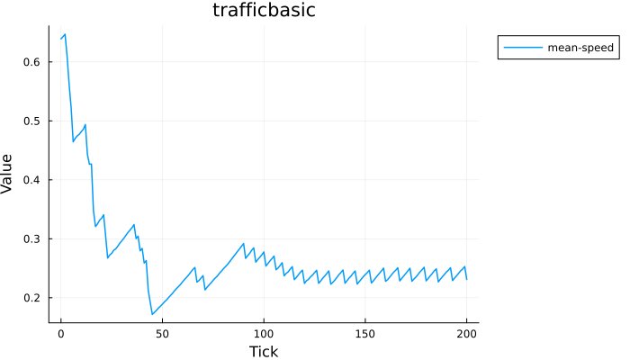
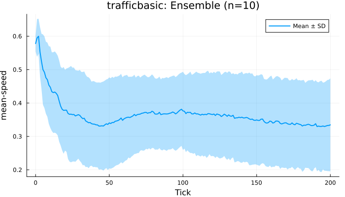
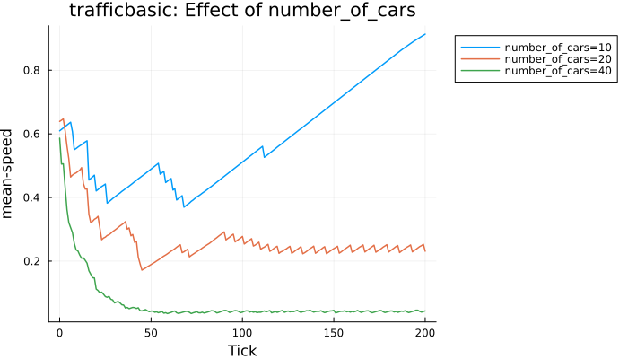

Traffic Basic
Overview
WHAT IS IT?
This model models the movement of cars on a highway. Each car follows a simple set of rules: it slows down (decelerates) if it sees a car close ahead, and speeds up (accelerates) if it doesn’t see a car ahead. The model demonstrates how traffic jams can form even without any accidents, broken bridges, or overturned trucks. No “centralized cause” is needed for a traffic jam to form.
THINGS TO NOTICE
Traffic jams can start from small “seeds.” These cars start with random positions and random speeds. If some cars are clustered together, they will move slowly, causing cars behind them to slow down, and a traffic jam forms.
Even though all of the cars are moving forward, the traffic jams tend to move backwards. This behavior is common in wave phenomena: the behavior of the group is often very different from the behavior of the individuals that make up the group.
The plot shows three values as the model runs:
the fastest speed of any car (this doesn’t exceed the speed limit!)
the slowest speed of any car
the speed of a single car (turtle 0), painted red so it can be watched.
Notice not only the maximum and minimum, but also the variability – the “jerkiness” of one vehicle.
Notice that the default settings have cars decelerating much faster than they accelerate. This is typical of traffic flow models.
Even though both ACCELERATION and DECELERATION are very small, the cars can achieve high speeds as these values are added or subtracted at each tick.
THINGS TO TRY
In this model there are three sliders that can affect the tendency to create traffic jams: the initial NUMBER-OF-CARS, ACCELERATION, and DECELERATION.
Look for patterns in how these settings affect the traffic flow. Which variable has the greatest effect? Do the patterns make sense? Do they seem to be consistent with your driving experiences?
Set DECELERATION to zero. What happens to the flow? Gradually increase DECELERATION while the model runs. At what point does the flow “break down”?
EXTENDING THE MODEL
Try other rules for speeding up and slowing down. Is the rule presented here realistic? Are there other rules that are more accurate or represent better driving strategies?
In reality, different vehicles may follow different rules. Try giving different rules or ACCELERATION/DECELERATION values to some of the cars. Can one bad driver mess things up?
The asymmetry between acceleration and deceleration is a simplified representation of different driving habits and response times. Can you explicitly encode these into the model?
What could you change to minimize the chances of traffic jams forming?
What could you change to make traffic jams move forward rather than backward?
Make a model of two-lane traffic.
NETLOGO FEATURES
The plot shows both global values and the value for a single car, which helps one watch overall patterns and individual behavior at the same time.
The watch command is used to make it easier to focus on the red car.
The speed-limit and speed-min variables are set to constant values. Since they are the same for every car, these variables could have been defined as globals rather than turtle variables. We have specified them as turtle variables since modifications or extensions to this model might well have every car with its own speed-limit values.
RELATED MODELS
“Traffic Basic Utility”: a version of “Traffic Basic” including a utility function for the cars.
“Traffic Basic Adaptive”: a version of “Traffic Basic” where cars adapt their acceleration to try and maintain a smooth flow of traffic.
“Traffic Basic Adaptive Individuals”: a version of “Traffic Basic Adaptive” where each car adapts individually, instead of all cars adapting in unison.
“Traffic 2 Lanes”: a more sophisticated two-lane version of the “Traffic Basic” model.
“Traffic Intersection”: a model of cars traveling through a single intersection.
“Traffic Grid”: a model of traffic moving in a city grid, with stoplights at the intersections.
“Traffic Grid Goal”: a version of “Traffic Grid” where the cars have goals, namely to drive to and from work.
“Gridlock HubNet”: a version of “Traffic Grid” where students control traffic lights in real-time.
“Gridlock Alternate HubNet”: a version of “Gridlock HubNet” where students can enter NetLogo code to plot custom metrics.
HOW TO CITE
If you mention this model or the NetLogo software in a publication, we ask that you include the citations below.
For the model itself:
- Wilensky, U. (1997). NetLogo Traffic Basic model. http://ccl.northwestern.edu/netlogo/models/TrafficBasic. Center for Connected Learning and Computer-Based Modeling, Northwestern University, Evanston, IL.
Please cite the NetLogo software as:
- Wilensky, U. (1999). NetLogo. http://ccl.northwestern.edu/netlogo/. Center for Connected Learning and Computer-Based Modeling, Northwestern University, Evanston, IL.
COPYRIGHT AND LICENSE
Copyright 1997 Uri Wilensky.

This model is licensed under the Creative Commons Attribution-NonCommercial-ShareAlike 3.0 License. To view a copy of this license, visit https://creativecommons.org/licenses/by-nc-sa/3.0/ or send a letter to Creative Commons, 559 Nathan Abbott Way, Stanford, California 94305, USA.
NetLogo itself is free software for non-commercial use under the terms of the GNU General Public License (see full license information here).
To inquire about commercial licenses for either NetLogo or specific models from the models library, please contact netlogo-commercial-admin@ccl.northwestern.edu.
This model was created as part of the project: CONNECTED MATHEMATICS: MAKING SENSE OF COMPLEX PHENOMENA THROUGH BUILDING OBJECT-BASED PARALLEL MODELS (OBPML). The project gratefully acknowledges the support of the National Science Foundation (Applications of Advanced Technologies Program) – grant numbers RED #9552950 and REC #9632612.
This model was developed at the MIT Media Lab using CM StarLogo. See Resnick, M. (1994) “Turtles, Termites and Traffic Jams: Explorations in Massively Parallel Microworlds.” Cambridge, MA: MIT Press. Adapted to StarLogoT, 1997, as part of the Connected Mathematics Project.
This model was converted to NetLogo as part of the projects: PARTICIPATORY SIMULATIONS: NETWORK-BASED DESIGN FOR SYSTEMS LEARNING IN CLASSROOMS and/or INTEGRATED SIMULATION AND MODELING ENVIRONMENT. The project gratefully acknowledges the support of the National Science Foundation (REPP & ROLE programs) – grant numbers REC #9814682 and REC-0126227. Converted from StarLogoT to NetLogo, 2001.
Parameters
| Parameter | Type | Default | Description |
|---|---|---|---|
number_of_cars | Int | 20 | number of cars |
acceleration | Float64 | 0.0045 | acceleration |
deceleration | Float64 | 0.026 | deceleration |
road_length | Int | 51 | world-width (from -25 to 25 = 51 patches) |
max_ticks | Int | 200 | max ticks |
Source Code
The Julia code to run this model:
using ArkModelZoo
_, trajectory = run_trafficbasic()Time Series

Ensemble Runs
Ten replicates with different random seeds, showing mean ± standard deviation.

Parameter Sensitivity
Varying number_of_cars.

Appendix: Source Code
This model is implemented in the Ark.jl Entity-Component-System (ECS) framework. The code is split into five files, each with a distinct role:
- Parameters: a mutable struct holding all configurable values.
- Components: lightweight data types attached to individual entities (agents).
- Resources: world-level shared state accessible to all systems.
- Systems: functions that operate on entities each tick, defining model behavior.
- Model: wiring that assembles the world, registers resources and systems, and provides the run entry point.
Parameters (parameters.jl)
The parameter struct uses @kwdef so that every field has a default value and can be overridden by keyword. These defaults match the original NetLogo model’s slider settings.
Base.@kwdef mutable struct TBParams
number_of_cars::Int = 20
acceleration::Float64 = 0.0045
deceleration::Float64 = 0.026
road_length::Int = 51 # world-width (from -25 to 25 = 51 patches)
max_ticks::Int = 200
seed::Int = 42
endComponents (components.jl)
Components are lightweight data types attached to individual entities (agents). Mutable structs hold per-entity state, while empty tag structs act as markers for the ECS query system to efficiently filter entities.
struct TBDummy endResources (resources.jl)
Resources are world-level singletons shared across all systems, used for global state and aggregate statistics.
mutable struct TBCar
x::Float64 # continuous position on the 1D road
speed::Float64
speed_limit::Float64
speed_min::Float64
end
mutable struct TBRoad
length::Int
cars::Vector{TBCar}
end
TBRoad(len::Int) = TBRoad(len, TBCar[])
mutable struct TBStats
mean_speed::Float64
end
TBStats() = TBStats(0.0)Systems (systems.jl)
Systems contain the model logic and execute in a defined order each tick. Each system struct implements either initialize! (run once at setup) or update! (run every tick).
# Traffic Basic systems matching NetLogo Traffic Basic
# Execution order: init → go (accelerate/decelerate + move) → terminate
using Random: shuffle!
# --- Initialization ---
# NetLogo: crt number-of-cars with random positions, separated so no two share a patch
struct InitTBSystem <: System end
function initialize!(::InitTBSystem, world::World)
params = get_resource(world, TBParams)
rng = get_resource(world, RNGResource).rng
road = get_resource(world, TBRoad)
n = min(params.number_of_cars, params.road_length)
empty!(road.cars)
# Pick n distinct integer positions (NetLogo separate-cars ensures no overlap)
positions = shuffle!(rng, collect(0:params.road_length - 1))[1:n]
for pos in positions
spd = 0.1 + rand(rng) * 0.9
push!(road.cars, TBCar(Float64(pos), spd, 1.0, 0.0))
end
# Update stats
stats = get_resource(world, TBStats)
stats.mean_speed = sum(c.speed for c in road.cars) / length(road.cars)
return nothing
end
# --- Go (main step) ---
# NetLogo: ask turtles (shuffled) — find car-ahead, adjust speed, move
struct TBGoSystem <: System end
function update!(::TBGoSystem, world::World)
params = get_resource(world, TBParams)
rng = get_resource(world, RNGResource).rng
road = get_resource(world, TBRoad)
stats = get_resource(world, TBStats)
L = road.length
cars = road.cars
n = length(cars)
n == 0 && return nothing
# NetLogo `ask turtles` shuffles — process in random order
order = shuffle!(rng, collect(1:n))
for idx in order
car = cars[idx]
# patch-ahead 1: the patch at floor(x) + 1, wrapped
patch_ahead = mod(floor(Int, car.x) + 1, L)
# Find car-ahead: any OTHER car whose floor(x) == patch_ahead
car_ahead_speed = nothing
for j in 1:n
j == idx && continue
if mod(floor(Int, cars[j].x), L) == patch_ahead
car_ahead_speed = cars[j].speed
break
end
end
if car_ahead_speed !== nothing
# Match speed of car ahead, then decelerate
car.speed = car_ahead_speed
car.speed -= params.deceleration
else
# No car ahead — accelerate
car.speed += params.acceleration
end
# Clamp speed to [speed_min, speed_limit]
car.speed < car.speed_min && (car.speed = car.speed_min)
car.speed > car.speed_limit && (car.speed = car.speed_limit)
# Move forward with wrapping
car.x = mod(car.x + car.speed, L)
end
# Update mean speed
stats.mean_speed = sum(c.speed for c in cars) / n
return nothing
end
# --- Termination ---
struct TBTerminationSystem <: System end
function update!(::TBTerminationSystem, world::World)
params = get_resource(world, TBParams)
tick = get_resource(world, Tick)
if tick.tick + 1 >= params.max_ticks
get_resource(world, Terminate).stop = true
end
return nothing
endModel (model.jl)
The model file assembles all pieces: it creates the ECS World with the required component types, registers resources, builds the Scheduler with systems in execution order, and exposes the public run entry point. The observer pattern records the trajectory each tick.
function trafficbasic_world(; initial_capacity::Int = 64)
return World(
TBDummy;
initial_capacity = initial_capacity,
allow_mutable = true,
)
end
function trafficbasic_systems()
return (
InitTBSystem(),
TBGoSystem(),
TBTerminationSystem(),
)
end
function trafficbasic_model(params::TBParams = TBParams())
world = trafficbasic_world()
_add_standard_resources!(world, params)
add_resource!(world, TBRoad(params.road_length))
add_resource!(world, TBStats())
scheduler = Scheduler(world, trafficbasic_systems())
initialize!(scheduler)
return scheduler
end
struct TBObserver end
function trafficbasic_headers(::TBObserver)
return ["mean-speed"]
end
function trafficbasic_values(::TBObserver, world::World)
stats = get_resource(world, TBStats)
return Float64[stats.mean_speed]
end
function run_trafficbasic(; params::TBParams = TBParams(), observe::Bool = true)
return _run_model(trafficbasic_model, TBObserver(), trafficbasic_values; params, observe)
end